Actividades extraescolares
Ampliamos el aprendizaje de nuestros niños y niñas con una gran variedad de actividades educativas, deportivas y culturales
Desde la AFA organizamos las actividades extraescolares basándonos en las propuestas que nos hacen llegar las familias, siempre que se alcance el mínimo de plazas necesarias.
Tenemos una amplia gama de opciones: deportivas (patinaje, baloncesto, esgrima, capoeira, voleibol, fútbol sala...), artísticas (piano, guitarra, teatro, plástica...) y educativas (inglés, ajedrez, apoyo...).
Actividad de Biblioteca: Se organiza desde la secretaría del colegio. Las inscripciones se realizan en secretaría a partir del 9 de septiembre y las plazas se conceden por orden de llegada.
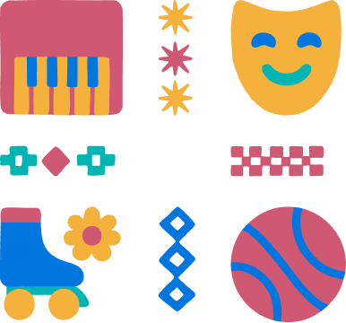
Actividades del curso 2025/2026
Consulta todas las actividades disponibles, horarios, precios y detalles en nuestro documento completo:
¿Cómo apuntarse?
1. Rellenar el formulario de inscripción
- Accede al formulario online o descarga e imprime la ficha de alta en PDF o Word (una ficha por cada estudiante). Antes de inscribirte, consulta el Reglamento de Extraescolares.
- Completa todos los campos y marca si eres o no socio/a de la AFA (los socios disfrutan de descuento en la cuota mensual). En el caso del formulario impreso, usa letra mayúscula y legible.
- Incluye la información completa de todos los tutores legales, con sus respectivas direcciones si no coinciden.


2. Realizar el pago
Opción A: Domiciliación bancaria
- El cargo se realizará entre el día 5 y el 10 de cada mes.
- Indica en el formulario el IBAN y el titular de la cuenta.
- En caso de devolución, el banco aplica un recargo de 1 €, que deberá abonarse junto con el importe pendiente y enviar el justificante de pago al correo: afaceipperu@gmail.com
Opción B: Transferencia bancaria
- Realiza la transferencia antes del día 10 de cada mes.
- Número de cuenta: IBAN: ES09 0049 5156 7123 1656 5022.
- Titular de la cuenta: APA DEL COLEGIO PUBLICO PERU G28873503
- Concepto: Nombre del alumno/a + nombre de la actividad.
Matrícula anual
El primer mes se cobrará, junto con la cuota mensual, una matrícula anual de 12 € por alumno/a, independientemente del número de actividades en las que participe.
Importante
Si no realizas el pago, recibirás un aviso para realizarlo antes de finalizar el mes en curso. En caso de no hacerlo, se tramitará una baja automática en las actividades adeudadas.
¿Cómo desapuntarse?
Rellena este PDF y envíalo a afaceipperu@gmail.com
¡Nuestras actividades en imágenes!
Descubre la diversidad y alegría de nuestras actividades extraescolares a través de estas imágenes
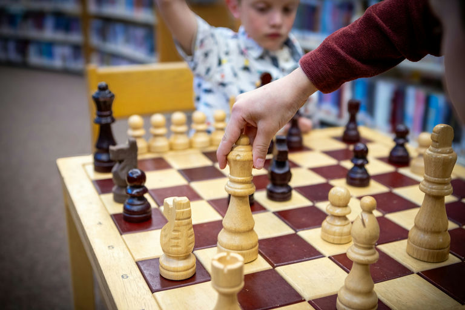
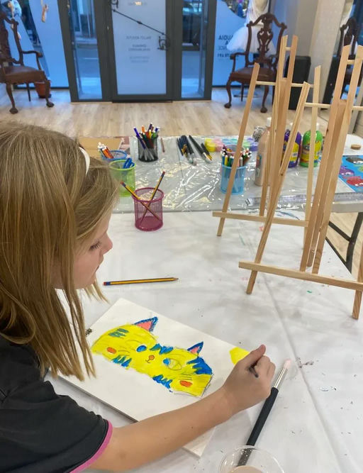
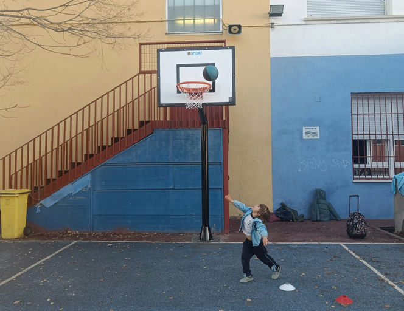
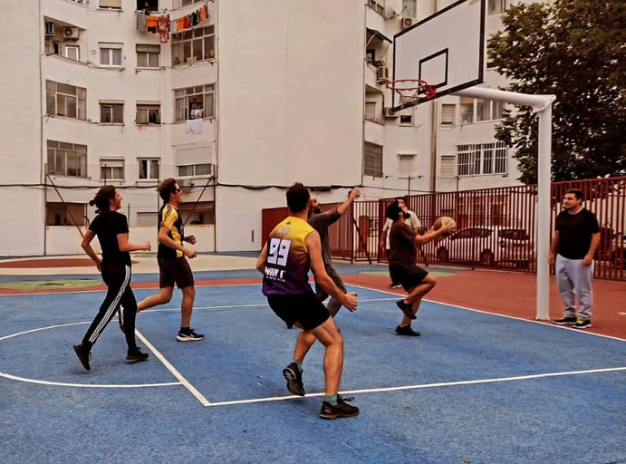
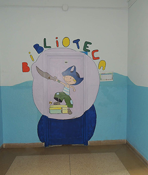
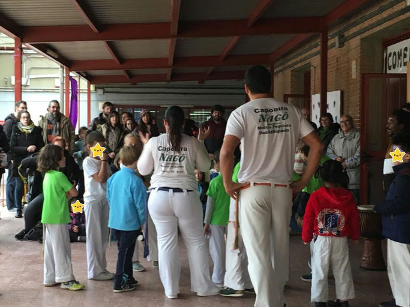
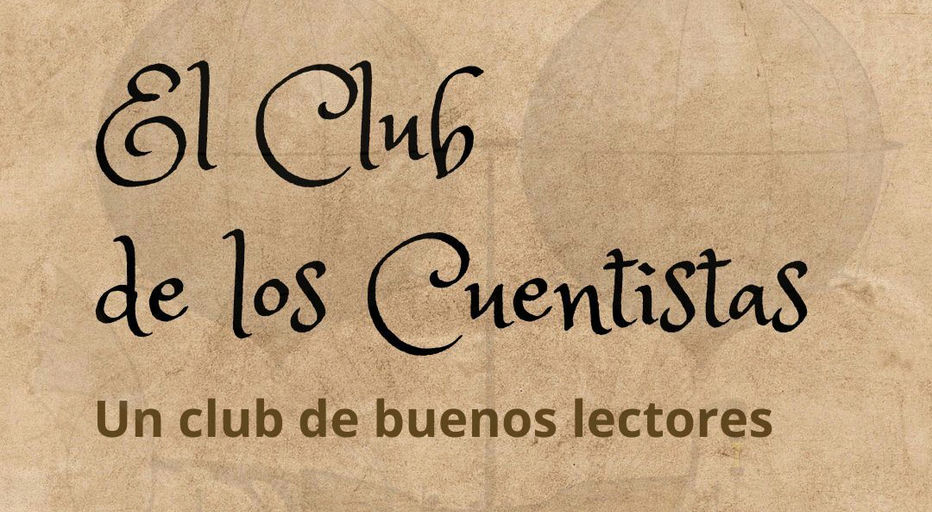
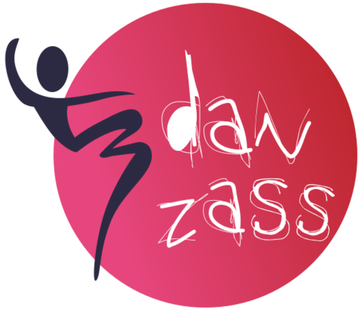

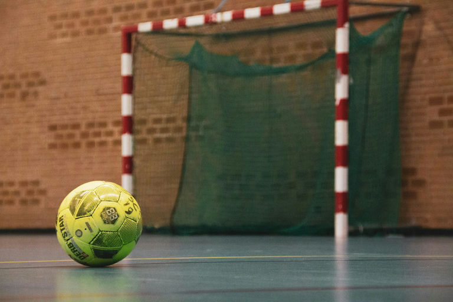
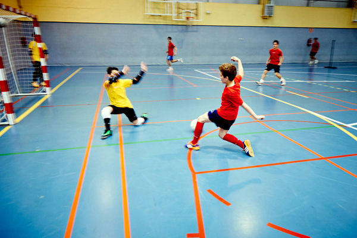
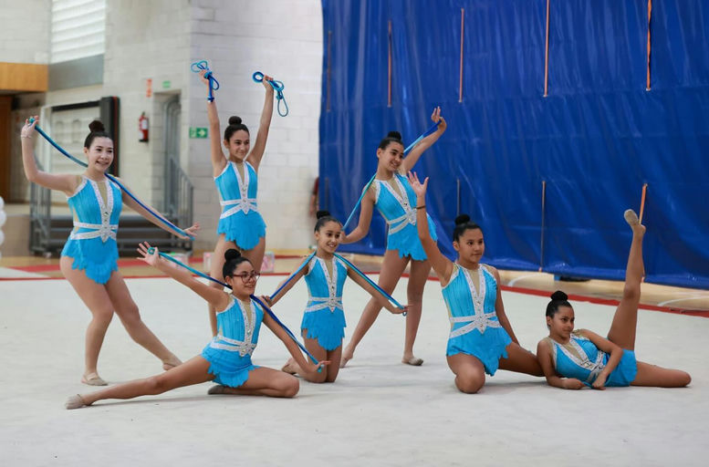
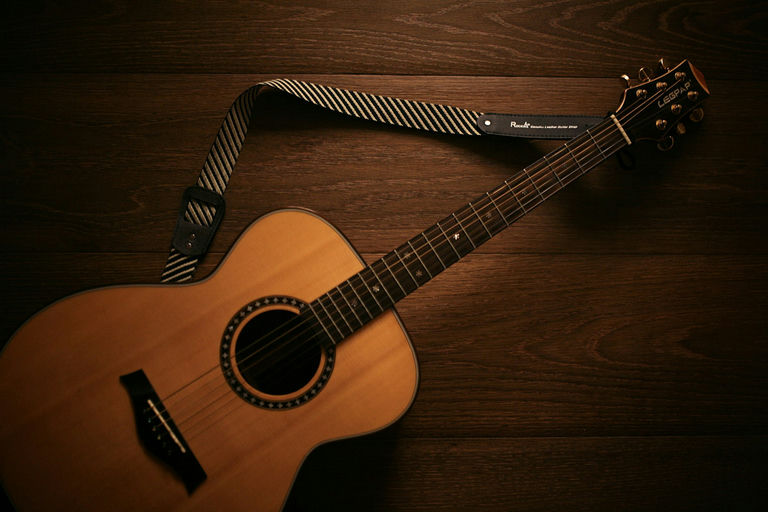
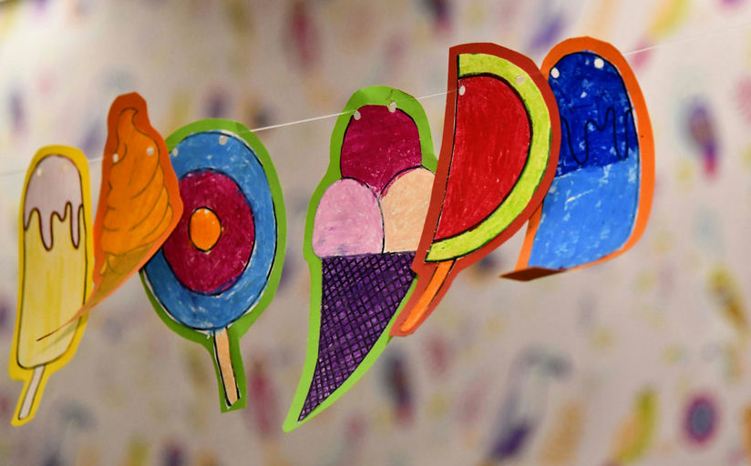
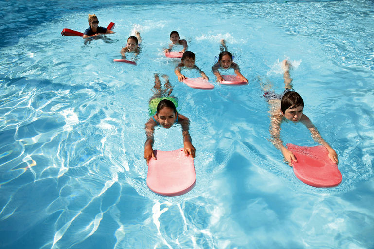
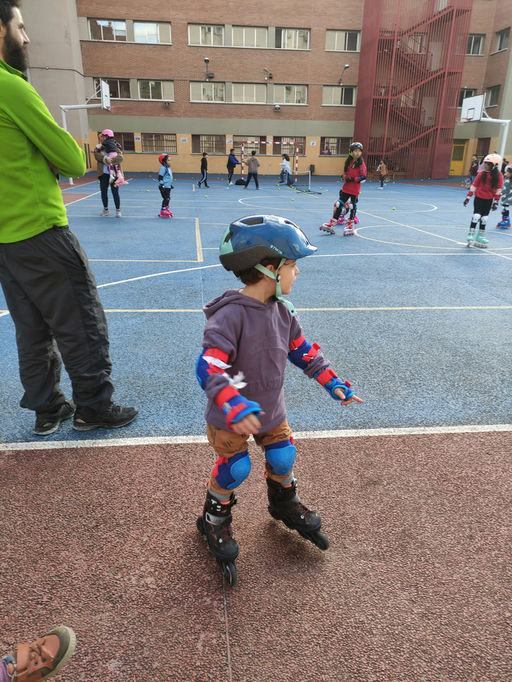
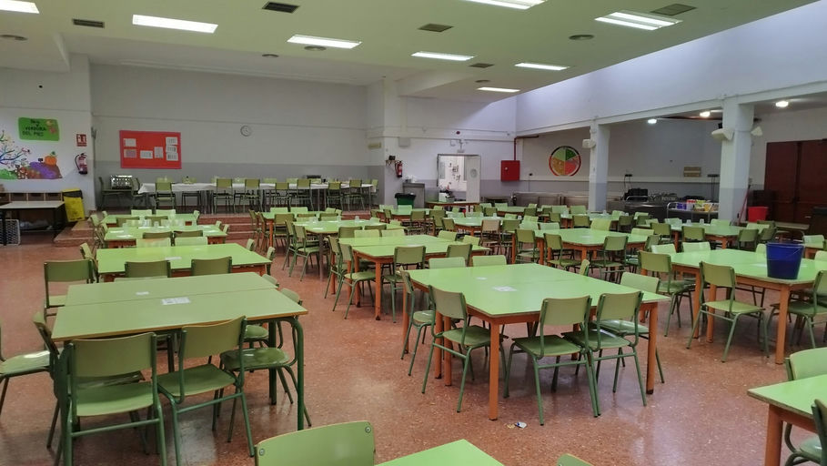
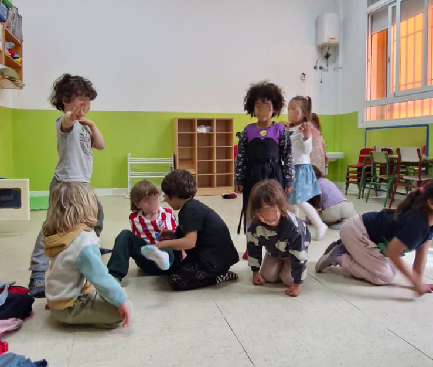
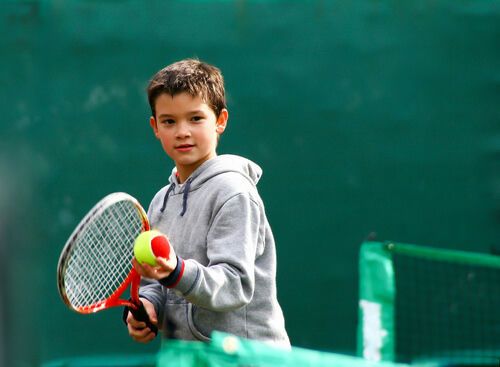
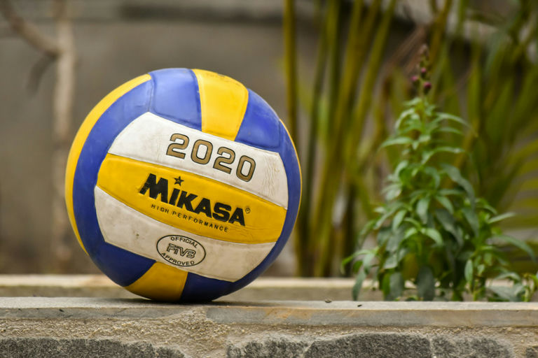